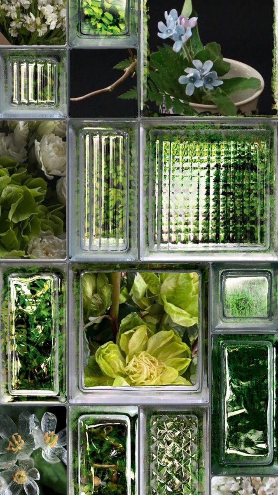
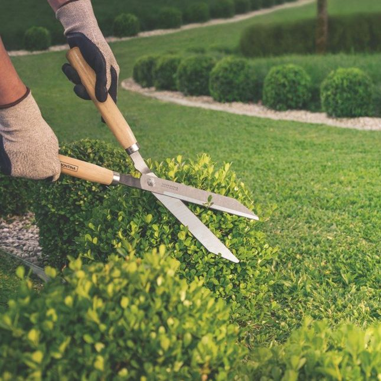
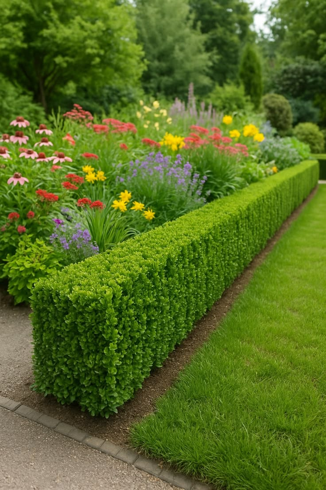
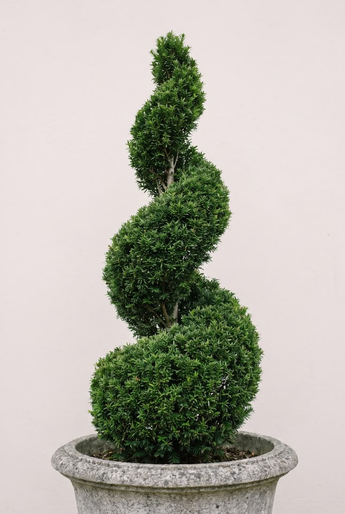

ARTE E FLORES PAISAGISMO
Poda de Plantas
Cuidados e podas para manter suas plantas bonitas, saudáveis e sempre bem cuidadas.
✂️ SOLICITAR ORÇAMENTO
NOSSOS CUIDADOS
Poda na medida certa.
Cada planta possui necessidades diferentes. Realizamos os cuidados necessários para preservar sua beleza e manter o jardim organizado.
Poda de formação
Cuidados para direcionar o crescimento e manter o formato das plantas.
Poda de manutenção
Retirada de partes excessivas para manter a planta organizada e bonita.
Retirada de folhas e galhos
Remoção de folhas e galhos secos ou indesejados.
Cuidados com arbustos
Podas para manter arbustos com aparência uniforme e bem cuidada.
Controle do crescimento
Manutenção do tamanho e formato das plantas conforme o espaço.
Acabamento do jardim
Cuidados que ajudam a deixar o jardim mais limpo e organizado.
NOSSO TRABALHO NA PRÁTICA
Cuidado que faz diferença.
Veja alguns exemplos de trabalhos realizados com cuidado e atenção aos detalhes.



Uma boa poda valoriza
a beleza das suas plantas.
Conte com a Arte e Flores Paisagismo para cuidar do seu jardim.
FALE CONOSCO
Precisa de uma poda?
Selecione os serviços que você precisa e solicite seu orçamento.